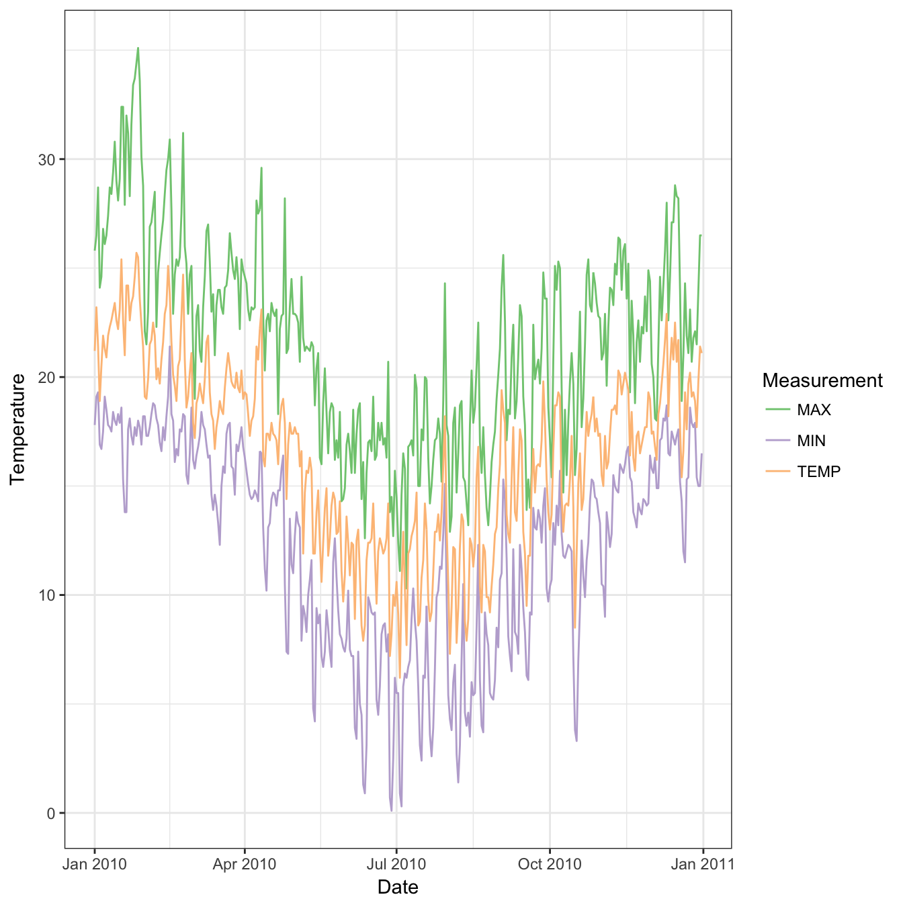

The GSOD or Global Surface Summary of the Day (GSOD) data provided by the US National Centers for Environmental Information (NCEI) are a valuable source of weather data with global coverage. However, the data files are cumbersome and difficult to work with. GSODR aims to make it easy to find, transfer and format the data you need for use in analysis and provides four main functions for facilitating this:
get_GSOD() - this function queries and transfers files from the NCEI’s FTP server, reformats them and returns a tidy data frame in R
reformat_GSOD() - this function takes individual station files from the local disk and re-formats them returning a tidy data frame in R
nearest_stations() - this function returns a vector of station IDs that fall within the given radius (kilometres) of a point given as latitude and longitude
update_station_list() - this function downloads the latest station list from the NCEI’s FTP server updates the package’s internal database of stations and their metadata.
get_inventory() - this function downloads the latest station inventory information from the NCEI’s FTP server and returns the header information about the latest version as a message in the console and a tidy data frame of the stations’ inventory for each month that data are reported.
When reformatting data either with get_GSOD() or reformat_GSOD(), all units are converted to International System of Units (SI), e.g., inches to millimetres and Fahrenheit to Celsius. Data in the R session summarise each year by station, which also includes vapour pressure and relative humidity elements calculated from existing data in GSOD.
For more information see the description of the data provided by NCEI, http://www7.ncdc.noaa.gov/CDO/GSOD_DESC.txt.
GSODR provides lists of weather station locations and elevation values. Using dplyr, we can find all the stations in Australia.
##
## GSOD is distributed free by the U.S. NCEI with the
## following conditions.
## 'The following data and products may have conditions placed
## their international commercial use. They can be used within
## the U.S. or for non-commercial international activities
## without restriction. The non-U.S. data cannot be
## redistributed for commercial purposes. Re-distribution of
## these data by others must provide this same notification.
## WMO Resolution 40. NOAA Policy'
##
## GSODR does not redistribute any weather data itself. It
## only provides an interface for R users to download these
## data, however it does redistribute station metadata in the
## package.##
## Attaching package: 'dplyr'## The following objects are masked from 'package:stats':
##
## filter, lag## The following objects are masked from 'package:base':
##
## intersect, setdiff, setequal, unionload(system.file("extdata", "country_list.rda", package = "GSODR"))
load(system.file("extdata", "isd_history.rda", package = "GSODR"))
station_locations <- left_join(isd_history, country_list,
by = c("CTRY" = "FIPS"))
# create data.frame for Australia only
Oz <- subset(station_locations, COUNTRY_NAME == "AUSTRALIA")
Oz## # A tibble: 1,396 x 16
## USAF WBAN STN_NAME CTRY STATE CALL LAT LON ELEV_M BEGIN END
## <chr> <chr> <chr> <chr> <chr> <chr> <dbl> <dbl> <dbl> <dbl> <dbl>
## 1 6950… 99999 HORN IS… AS <NA> KQXC -10.6 142. NA 2.00e7 2.00e7
## 2 7494… 99999 AIDELAI… AS <NA> <NA> -13.3 131. 131 1.94e7 1.94e7
## 3 7494… 99999 REID EA… AS <NA> <NA> -19.8 147. 122 1.94e7 1.94e7
## 4 7494… 99999 WOODSTO… AS <NA> <NA> -19.6 147. 64 1.94e7 1.94e7
## 5 7494… 99999 LAKE BU… AS <NA> <NA> -21.4 145. 396 1.94e7 1.94e7
## 6 7494… 99999 DALBY S… AS <NA> <NA> -27.2 151. 413 1.94e7 1.94e7
## 7 7494… 99999 NORTH P… AS <NA> <NA> -33.8 151 19 1.94e7 1.94e7
## 8 9142… 99999 MIDDLE … AS <NA> <NA> -12.6 131. 10 2.00e7 2.00e7
## 9 9210… 99999 BROOSE … AS <NA> <NA> -14.1 124. 5 2.00e7 2.00e7
## 10 9212… 99999 DARWIN … AS <NA> <NA> -12.4 131. 29 2.00e7 2.00e7
## # ... with 1,386 more rows, and 5 more variables: STNID <chr>,
## # ELEV_M_SRTM_90m <dbl>, COUNTRY_NAME <chr>, iso2c <chr>, iso3c <chr>## # A tibble: 2 x 16
## USAF WBAN STN_NAME CTRY STATE CALL LAT LON ELEV_M BEGIN END
## <chr> <chr> <chr> <chr> <chr> <chr> <dbl> <dbl> <dbl> <dbl> <dbl>
## 1 945510 99999 TOOWOOM… AS <NA> <NA> -27.6 152. 676 1.96e7 2.01e7
## 2 955510 99999 TOOWOOM… AS <NA> <NA> -27.6 152. 642 2.00e7 2.02e7
## # ... with 5 more variables: STNID <chr>, ELEV_M_SRTM_90m <dbl>,
## # COUNTRY_NAME <chr>, iso2c <chr>, iso3c <chr>Now that we’ve seen where the reporting stations are located, we can download weather data from the station Toowoomba, Queensland, Australia for 2010 by using the STNID in the station parameter of get_GSOD().
## # A tibble: 365 x 48
## USAF WBAN STNID STN_NAME CTRY STATE CALL LAT LON ELEV_M
## <chr> <chr> <chr> <chr> <chr> <chr> <chr> <dbl> <dbl> <dbl>
## 1 955510 99999 955510-… TOOWOOMBA A… AS <NA> <NA> -27.6 152. 642
## 2 955510 99999 955510-… TOOWOOMBA A… AS <NA> <NA> -27.6 152. 642
## 3 955510 99999 955510-… TOOWOOMBA A… AS <NA> <NA> -27.6 152. 642
## 4 955510 99999 955510-… TOOWOOMBA A… AS <NA> <NA> -27.6 152. 642
## 5 955510 99999 955510-… TOOWOOMBA A… AS <NA> <NA> -27.6 152. 642
## 6 955510 99999 955510-… TOOWOOMBA A… AS <NA> <NA> -27.6 152. 642
## 7 955510 99999 955510-… TOOWOOMBA A… AS <NA> <NA> -27.6 152. 642
## 8 955510 99999 955510-… TOOWOOMBA A… AS <NA> <NA> -27.6 152. 642
## 9 955510 99999 955510-… TOOWOOMBA A… AS <NA> <NA> -27.6 152. 642
## 10 955510 99999 955510-… TOOWOOMBA A… AS <NA> <NA> -27.6 152. 642
## # ... with 355 more rows, and 38 more variables: ELEV_M_SRTM_90m <dbl>,
## # BEGIN <dbl>, END <dbl>, YEARMODA <date>, YEAR <chr>, MONTH <chr>,
## # DAY <chr>, YDAY <dbl>, TEMP <dbl>, TEMP_CNT <int>, DEWP <dbl>,
## # DEWP_CNT <int>, SLP <dbl>, SLP_CNT <int>, STP <dbl>, STP_CNT <int>,
## # VISIB <dbl>, VISIB_CNT <int>, WDSP <dbl>, WDSP_CNT <int>, MXSPD <dbl>,
## # GUST <dbl>, MAX <dbl>, MAX_FLAG <chr>, MIN <dbl>, MIN_FLAG <chr>,
## # PRCP <dbl>, PRCP_FLAG <chr>, SNDP <dbl>, I_FOG <int>,
## # I_RAIN_DRIZZLE <int>, I_SNOW_ICE <int>, I_HAIL <int>, I_THUNDER <int>,
## # I_TORNADO_FUNNEL <int>, EA <dbl>, ES <dbl>, RH <dbl>Using the nearest_stations() function, you can find stations closest to a given point specified by latitude and longitude in decimal degrees. This can be used to generate a vector to pass along to get_GSOD() and download the stations of interest.
There are missing stations in this query. Not all that are listed and queried actually have files on the server.
tbar_stations <- nearest_stations(LAT = -27.5598,
LON = 151.9507,
distance = 50)
tbar <- get_GSOD(years = 2010, station = tbar_stations)If you wished to drop the stations, 949999-00170 and 949999-00183 from the query, you could do this.
Using the first data downloaded for a single station, 955510-99999, plot the temperature for 2010.
##
## Attaching package: 'lubridate'## The following object is masked from 'package:base':
##
## datelibrary(tidyr)
# Create a dataframe of just the date and temperature values that we want to
# plot
tbar_temps <- tbar[, c("YEARMODA", "TEMP", "MAX", "MIN")]
# Gather the data from wide to long
tbar_temps <- gather(tbar_temps, Measurement, gather_cols = TEMP:MIN)
ggplot(data = tbar_temps, aes(x = ymd(YEARMODA), y = value,
colour = Measurement)) +
geom_line() +
scale_color_brewer(type = "qual", na.value = "black") +
scale_y_continuous(name = "Temperature") +
scale_x_date(name = "Date") +
theme_bw()
Because the stations provide geospatial location information, it is possible to create a spatial file. GeoPackage files are a open, standards-based, platform-independent, portable, self-describing compact format for transferring geospatial information, which handle vector files much like shapefiles do, but eliminate many of the issues that shapefiles have with field names and the number of files.
Converting the GSOD data to a spatial object is rather simple. In R there are two options, sp and sf. The sp format is older and more well established, but sf offers some new exciting possibilities.
For this example we convert the data to a sp object. You might use this one to save GeoPackage or ESRI shapefiles for sharing or analysis in another GIS program.
# get GSOD data
library(sp)
GSOD <- get_GSOD(years = 2015, country = "Australia")
# convert to SpatialPointsDataFrame
coordinates(GSOD_sp) <- ~ LON + LAT
proj4string(GSOD_sp) <- CRS("+proj=longlat +datum=WGS84")
str(GSOD_sp)#> Formal class 'SpatialPointsDataFrame' [package "sp"] with 5 slots
#> ..@ data :Classes ‘tbl_df’, ‘tbl’ and 'data.frame': 186977 obs. of 46 variables:
#> .. ..$ USAF : chr [1:186977] "941000" "941000" "941000" "941000" ...
#> .. ..$ WBAN : chr [1:186977] "99999" "99999" "99999" "99999" ...
#> .. ..$ STNID : chr [1:186977] "941000-99999" "941000-99999" "941000-99999" "941000-99999" ...
#> .. ..$ STN_NAME : chr [1:186977] "KALUMBURU" "KALUMBURU" "KALUMBURU" "KALUMBURU" ...
#> .. ..$ CTRY : chr [1:186977] "AS" "AS" "AS" "AS" ...
#> .. ..$ STATE : chr [1:186977] NA NA NA NA ...
#> .. ..$ CALL : chr [1:186977] NA NA NA NA ...
#> .. ..$ ELEV_M : num [1:186977] 24 24 24 24 24 24 24 24 24 24 ...
#> .. ..$ ELEV_M_SRTM_90m : num [1:186977] 17 17 17 17 17 17 17 17 17 17 ...
#> .. ..$ BEGIN : num [1:186977] 2e+07 2e+07 2e+07 2e+07 2e+07 ...
#> .. ..$ END : num [1:186977] 20171212 20171212 20171212 20171212 20171212 ...
#> .. ..$ YEARMODA : Date[1:186977], format: "2015-01-01" "2015-01-02" "2015-01-03" ...
#> .. ..$ YEAR : chr [1:186977] "2015" "2015" "2015" "2015" ...
#> .. ..$ MONTH : chr [1:186977] "01" "01" "01" "01" ...
#> .. ..$ DAY : chr [1:186977] "01" "02" "03" "04" ...
#> .. ..$ YDAY : num [1:186977] 1 2 3 4 5 6 7 8 9 10 ...
#> .. ..$ TEMP : num [1:186977] 26.9 27.2 26.3 27.3 27.3 26.7 28.1 28.7 27.6 27.8 ...
#> .. ..$ TEMP_CNT : int [1:186977] 16 16 16 16 16 16 16 16 16 16 ...
#> .. ..$ DEWP : num [1:186977] 23.2 23.3 23.8 24.1 24.3 24 23.6 23.3 21.9 22.3 ...
#> .. ..$ DEWP_CNT : int [1:186977] 16 16 16 16 16 16 16 16 16 16 ...
#> .. ..$ SLP : num [1:186977] 1004 1003 1003 1002 1001 ...
#> .. ..$ SLP_CNT : int [1:186977] 16 16 16 16 16 16 16 16 16 16 ...
#> .. ..$ STP : num [1:186977] 1002 1000 NA 999 998 ...
#> .. ..$ STP_CNT : int [1:186977] 16 16 16 16 16 16 16 16 16 16 ...
#> .. ..$ VISIB : num [1:186977] NA NA NA NA NA NA NA NA NA NA ...
#> .. ..$ VISIB_CNT : int [1:186977] 0 0 0 0 0 0 0 0 0 0 ...
#> .. ..$ WDSP : num [1:186977] 1.7 2.2 1.7 2 2.6 3.4 4.5 5.9 4.4 2.4 ...
#> .. ..$ WDSP_CNT : int [1:186977] 16 16 16 16 16 16 16 16 16 16 ...
#> .. ..$ MXSPD : num [1:186977] 4.1 4.1 4.1 4.1 5.7 5.7 6.7 9.3 7.7 4.6 ...
#> .. ..$ GUST : num [1:186977] NA NA NA NA NA NA NA NA NA NA ...
#> .. ..$ MAX : num [1:186977] 31.5 31.3 29.2 32.1 31.4 28.6 30.2 31 32.7 32.9 ...
#> .. ..$ MAX_FLAG : chr [1:186977] NA NA NA NA ...
#> .. ..$ MIN : num [1:186977] 25 24.9 24.4 24.3 24.6 25.1 24.5 26.3 22.8 22.6 ...
#> .. ..$ MIN_FLAG : chr [1:186977] NA "*" "*" NA ...
#> .. ..$ PRCP : num [1:186977] 16.5 12.4 5.1 20.3 41.1 20.1 82.3 2.3 6.1 27.4 ...
#> .. ..$ PRCP_FLAG : chr [1:186977] "G" "G" "G" "G" ...
#> .. ..$ SNDP : num [1:186977] NA NA NA NA NA NA NA NA NA NA ...
#> .. ..$ I_FOG : int [1:186977] 0 0 0 0 0 0 0 0 0 0 ...
#> .. ..$ I_RAIN_DRIZZLE : int [1:186977] 1 1 1 1 1 1 1 1 1 0 ...
#> .. ..$ I_SNOW_ICE : int [1:186977] 0 0 0 0 0 0 0 0 0 0 ...
#> .. ..$ I_HAIL : int [1:186977] 0 0 0 0 0 0 0 0 0 0 ...
#> .. ..$ I_THUNDER : int [1:186977] 0 0 0 0 0 0 0 0 0 0 ...
#> .. ..$ I_TORNADO_FUNNEL: int [1:186977] 0 0 0 0 0 0 0 0 0 0 ...
#> .. ..$ EA : num [1:186977] 2.8 2.9 2.9 3 3 3 2.9 2.9 2.6 2.7 ...
#> .. ..$ ES : num [1:186977] 3.5 3.6 3.4 3.6 3.6 3.5 3.8 3.9 3.7 3.7 ...
#> .. ..$ RH : num [1:186977] 80 80.6 85.3 83.3 83.3 85.7 76.3 74.4 70.3 73 ...
#> ..@ coords.nrs : int [1:2] 9 8
#> ..@ coords : num [1:186977, 1:2] 127 127 127 127 127 ...
#> .. ..- attr(*, "dimnames")=List of 2
#> .. .. ..$ : chr [1:186977] "1" "2" "3" "4" ...
#> .. .. ..$ : chr [1:2] "LON" "LAT"
#> ..@ bbox : num [1:2, 1:2] 73.7 -54.5 159.1 -10.1
#> .. ..- attr(*, "dimnames")=List of 2
#> .. .. ..$ : chr [1:2] "LON" "LAT"
#> .. .. ..$ : chr [1:2] "min" "max"
#> ..@ proj4string:Formal class 'CRS' [package "sp"] with 1 slot
#> .. .. ..@ projargs: chr "+proj=longlat +datum=WGS84 +ellps=WGS84 +towgs84=0,0,0"Using writeOGR() it is simple to save as a GeoPackage file.
Using writeOGR() it is simple to save as an ESRI shapefile.
Simple features are an ISO defined standard that now have support in R. From the sf vignette:
Simple features or simple feature access refers to a formal standard (ISO 19125-1:2004) that describes how objects in the real world can be represented in computers, with emphasis on the spatial geometry of these objects. It also describes how such objects can be stored in and retrieved from databases, and which geometrical operations should be defined for them. The standard is widely implemented in spatial databases (such as PostGIS), commercial GIS (e.g., ESRI ArcGIS) and forms the vector data basis for libraries such as GDAL. A subset of simple features forms the GeoJSON standard.
For this example, we convert the GSOD data to an sf object.
library(sf)
GSOD_SF <- st_as_sf(x = GSOD,
coords = c("LON", "LAT"),
crs = "+proj=longlat +datum=WGS84")
str(GSOD_SF)#> Classes ‘sf’ and 'data.frame': 186977 obs. of 47 variables:
#> $ USAF : chr "941000" "941000" "941000" "941000" ...
#> $ WBAN : chr "99999" "99999" "99999" "99999" ...
#> $ STNID : chr "941000-99999" "941000-99999" "941000-99999" "941000-99999" ...
#> $ STN_NAME : chr "KALUMBURU" "KALUMBURU" "KALUMBURU" "KALUMBURU" ...
#> $ CTRY : chr "AS" "AS" "AS" "AS" ...
#> $ STATE : chr NA NA NA NA ...
#> $ CALL : chr NA NA NA NA ...
#> $ ELEV_M : num 24 24 24 24 24 24 24 24 24 24 ...
#> $ ELEV_M_SRTM_90m : num 17 17 17 17 17 17 17 17 17 17 ...
#> $ BEGIN : num 2e+07 2e+07 2e+07 2e+07 2e+07 ...
#> $ END : num 20171212 20171212 20171212 20171212 20171212 ...
#> $ YEARMODA : Date, format: "2015-01-01" "2015-01-02" ...
#> $ YEAR : chr "2015" "2015" "2015" "2015" ...
#> $ MONTH : chr "01" "01" "01" "01" ...
#> $ DAY : chr "01" "02" "03" "04" ...
#> $ YDAY : num 1 2 3 4 5 6 7 8 9 10 ...
#> $ TEMP : num 26.9 27.2 26.3 27.3 27.3 26.7 28.1 28.7 27.6 27.8 ...
#> $ TEMP_CNT : int 16 16 16 16 16 16 16 16 16 16 ...
#> $ DEWP : num 23.2 23.3 23.8 24.1 24.3 24 23.6 23.3 21.9 22.3 ...
#> $ DEWP_CNT : int 16 16 16 16 16 16 16 16 16 16 ...
#> $ SLP : num 1004 1003 1003 1002 1001 ...
#> $ SLP_CNT : int 16 16 16 16 16 16 16 16 16 16 ...
#> $ STP : num 1002 1000 NA 999 998 ...
#> $ STP_CNT : int 16 16 16 16 16 16 16 16 16 16 ...
#> $ VISIB : num NA NA NA NA NA NA NA NA NA NA ...
#> $ VISIB_CNT : int 0 0 0 0 0 0 0 0 0 0 ...
#> $ WDSP : num 1.7 2.2 1.7 2 2.6 3.4 4.5 5.9 4.4 2.4 ...
#> $ WDSP_CNT : int 16 16 16 16 16 16 16 16 16 16 ...
#> $ MXSPD : num 4.1 4.1 4.1 4.1 5.7 5.7 6.7 9.3 7.7 4.6 ...
#> $ GUST : num NA NA NA NA NA NA NA NA NA NA ...
#> $ MAX : num 31.5 31.3 29.2 32.1 31.4 28.6 30.2 31 32.7 32.9 ...
#> $ MAX_FLAG : chr NA NA NA NA ...
#> $ MIN : num 25 24.9 24.4 24.3 24.6 25.1 24.5 26.3 22.8 22.6 ...
#> $ MIN_FLAG : chr NA "*" "*" NA ...
#> $ PRCP : num 16.5 12.4 5.1 20.3 41.1 20.1 82.3 2.3 6.1 27.4 ...
#> $ PRCP_FLAG : chr "G" "G" "G" "G" ...
#> $ SNDP : num NA NA NA NA NA NA NA NA NA NA ...
#> $ I_FOG : int 0 0 0 0 0 0 0 0 0 0 ...
#> $ I_RAIN_DRIZZLE : int 1 1 1 1 1 1 1 1 1 0 ...
#> $ I_SNOW_ICE : int 0 0 0 0 0 0 0 0 0 0 ...
#> $ I_HAIL : int 0 0 0 0 0 0 0 0 0 0 ...
#> $ I_THUNDER : int 0 0 0 0 0 0 0 0 0 0 ...
#> $ I_TORNADO_FUNNEL: int 0 0 0 0 0 0 0 0 0 0 ...
#> $ EA : num 2.8 2.9 2.9 3 3 3 2.9 2.9 2.6 2.7 ...
#> $ ES : num 3.5 3.6 3.4 3.6 3.6 3.5 3.8 3.9 3.7 3.7 ...
#> $ RH : num 80 80.6 85.3 83.3 83.3 85.7 76.3 74.4 70.3 73 ...
#> $ geometry :sfc_POINT of length 186977; first list element: Classes 'XY', 'POINT', 'sfg' num [1:2] 126.6 -14.3
#> - attr(*, "sf_column")= chr "geometry"
#> - attr(*, "agr")= Factor w/ 3 levels "constant","aggregate",..: NA NA NA NA NA NA NA NA NA NA ...
#> ..- attr(*, "names")= chr "USAF" "WBAN" "STNID" "STN_NAME" ...Writing a shapefile is a simple matter.
As is writing a GeoPackage from the sf object.
After getting weather stations for Australia and creating a GeoPackage file, rgdal can import the data into R again in a spatial format.
Importing a GeoPackage file can be a bit tricky. The dsn will be the full path along with the file name. The layer to be specified is “GSOD”, this is specified in the get_GSOD() function and will not change. The file name, specified in the dsn will, but the layer name will not.
library(rgdal)
#> Loading required package: sp
#> rgdal: version: 1.1-10, (SVN revision 622)
#> Geospatial Data Abstraction Library extensions to R successfully loaded
#> Loaded GDAL runtime: GDAL 1.11.5, released 2016/07/01
#> Path to GDAL shared files: /usr/local/Cellar/gdal/1.11.5_1/share/gdal
#> Loaded PROJ.4 runtime: Rel. 4.9.3, 15 August 2016, [PJ_VERSION: 493]
#> Path to PROJ.4 shared files: (autodetected)
#> Linking to sp version: 1.2-3
AUS_stations <- readOGR(dsn = path.expand("~/GSOD.gpkg"), layer = "GSOD")
#> OGR data source with driver: GPKG
#> Source: "/Users/asparks/AUS-2015.gpkg", layer: "GSOD"
#> with 186977 features
#> It has 46 fields
class(AUS_stations)
#> [1] "SpatialPointsDataFrame"
#> attr(,"package")
#> [1] "sp"Since GeoPackage files are formatted as SQLite databases you can use the existing R tools for SQLite files (J. Stachelek 2016). One easy way is using dplyr. This option is much faster to load since it does not load the geometry.
You may have already downloaded GSOD data or may just wish to use an FTP client to download the files from the server to you local disk and not use the capabilities of get_GSOD(). In that case the reformat_GSOD() function is useful.
There are two ways, you can either provide reformat_GSOD() with a list of specified station files or you can supply it with a directory containing all of the “WBAN-WMO-YYYY.op.gz” station files that you wish to reformat.
GSODR uses internal databases of station data from the NCEI to provide location and other metadata, e.g. elevation, station names, WMO codes, etc. to make the process of querying for weather data faster. This database is created and packaged with GSODR for distribution and is updated with new releases. Users have the option of updating these databases after installing GSODR. While this option gives the users the ability to keep the database up-to-date and gives GSODR’s authors flexibility in maintaining it, this also means that reproducibility may be affected since the same version of GSODR may have different databases on different machines. If reproducibility is necessary, care should be taken to ensure that the version of the databases is the same across different machines.
The database file isd_history.rda can be located on your local system by using the following command, paste0(.libPaths(), "/GSODR/extdata")[1], unless you have specified another location for library installations and installed GSODR there, in which case it would still be in GSODR/extdata.
To update GSODR’s internal database of station locations simply use update_station_list(), which will update the internal station database according to the latest data available from the NCEI.
GSODR provides a function, get_inventory() to retrieve an inventory of the number of weather observations by station-year-month for the beginning of record through to current.
Following is an example of how to retrieve the inventory and check a station in Toowoomba, Queensland, Australia, which was used in an earlier example.
Additional climate data, GSODRdata, formatted for use with GSOD data provided by GSODR are available as an R package, which can only be installed through GitHub due to the package size, 5.1Mb, being too large for CRAN.
90 metre (90m) hole-filled SRTM digital elevation (Jarvis et al. 2008) was used to identify and correct/remove elevation errors in data for station locations between -60˚ and 60˚ latitude. This applies to cases here where elevation was missing in the reported values as well. In case the station reported an elevation and the DEM does not, the station reported is taken. For stations beyond -60˚ and 60˚ latitude, the values are station reported values in every instance. See https://github.com/ropensci/GSODR/blob/master/data-raw/fetch_isd-history.md for more detail on the correction methods.
Users of these data should take into account the following (from the NCEI website):
“The following data and products may have conditions placed on their international commercial use. They can be used within the U.S. or for non-commercial international activities without restriction. The non-U.S. data cannot be redistributed for commercial purposes. Re-distribution of these data by others must provide this same notification.” WMO Resolution 40. NOAA Policy
Stachelek, J. (2016) Using the Geopackage Format with R. URL: https://jsta.github.io/2016/07/14/geopackage-r.html
GSODR formatted data include the following fields and units:
STNID - Station number (WMO/DATSAV3 number) for the location;
WBAN - number where applicable–this is the historical “Weather Bureau Air Force Navy” number - with WBAN being the acronym;
STN_NAME - Unique text identifier;
CTRY - Country in which the station is located;
LAT - Latitude. Station dropped in cases where values are < -90 or > 90 degrees or Lat = 0 and Lon = 0;
LON - Longitude. Station dropped in cases where values are < -180 or > 180 degrees or Lat = 0 and Lon = 0;
ELEV_M - Elevation in metres;
ELEV_M_SRTM_90m - Elevation in metres corrected for possible errors, derived from the CGIAR-CSI SRTM 90m database (Jarvis et al. 2008);
YEARMODA - Date in YYYY-mm-dd format;
YEAR - The year (YYYY);
MONTH - The month (mm);
DAY - The day (dd);
YDAY - Sequential day of year (not in original GSOD);
TEMP - Mean daily temperature converted to degrees C to tenths. Missing = NA;
TEMP_CNT - Number of observations used in calculating mean daily temperature;
DEWP - Mean daily dew point converted to degrees C to tenths. Missing = NA;
DEWP_CNT - Number of observations used in calculating mean daily dew point;
SLP - Mean sea level pressure in millibars to tenths. Missing = NA;
SLP_CNT - Number of observations used in calculating mean sea level pressure;
STP - Mean station pressure for the day in millibars to tenths. Missing = NA;
STP_CNT - Number of observations used in calculating mean station pressure;
VISIB - Mean visibility for the day converted to kilometres to tenths Missing = NA;
VISIB_CNT - Number of observations used in calculating mean daily visibility;
WDSP - Mean daily wind speed value converted to metres/second to tenths. Missing = NA;
WDSP_CNT - Number of observations used in calculating mean daily wind speed;
MXSPD - Maximum sustained wind speed reported for the day converted to metres/second to tenths. Missing = NA;
GUST - Maximum wind gust reported for the day converted to metres/second to tenths. Missing = NA;
MAX - Maximum temperature reported during the day converted to Celsius to tenths–time of max temp report varies by country and region, so this will sometimes not be the max for the calendar day. Missing = NA;
MAX_FLAG - Blank indicates max temp was taken from the explicit max temp report and not from the ‘hourly’ data. An “*” indicates max temp was derived from the hourly data (i.e., highest hourly or synoptic-reported temperature);
MIN - Minimum temperature reported during the day converted to Celsius to tenths–time of min temp report varies by country and region, so this will sometimes not be the max for the calendar day. Missing = NA;
MIN_FLAG - Blank indicates max temp was taken from the explicit min temp report and not from the ‘hourly’ data. An “*” indicates min temp was derived from the hourly data (i.e., highest hourly or synoptic-reported temperature);
PRCP - Total precipitation (rain and/or melted snow) reported during the day converted to millimetres to hundredths; will usually not end with the midnight observation, i.e., may include latter part of previous day. A value of “.00” indicates no measurable precipitation (includes a trace). Missing = NA; Note: Many stations do not report ‘0’ on days with no precipitation– therefore, ‘NA’ will often appear on these days. For example, a station may only report a 6-hour amount for the period during which rain fell. See FLAGS_PRCP column for source of data;
PRCP_FLAG -
A = 1 report of 6-hour precipitation amount;
B = Summation of 2 reports of 6-hour precipitation amount;
C = Summation of 3 reports of 6-hour precipitation amount;
D = Summation of 4 reports of 6-hour precipitation amount;
E = 1 report of 12-hour precipitation amount;
F = Summation of 2 reports of 12-hour precipitation amount;
G = 1 report of 24-hour precipitation amount;
H = Station reported ‘0’ as the amount for the day (e.g. from 6-hour reports), but also reported at least one occurrence of precipitation in hourly observations–this could indicate a rrace occurred, but should be considered as incomplete data for the day;
I = Station did not report any precipitation data for the day and did not report any occurrences of precipitation in its hourly observations–it’s still possible that precipitation occurred but was not reported;
SNDP - Snow depth in millimetres to tenths. Missing = NA;
I_FOG - Indicator for fog, (1 = yes, 0 = no/not reported) for the occurrence during the day;
I_RAIN_DRIZZLE - Indicator for rain or drizzle, (1 = yes, 0 = no/not reported) for the occurrence during the day;
I_SNOW_ICE - Indicator for snow or ice pellets, (1 = yes, 0 = no/not reported) for the occurrence during the day;
I_HAIL - Indicator for hail, (1 = yes, 0 = no/not reported) for the occurrence during the day;
I_THUNDER - Indicator for thunder, (1 = yes, 0 = no/not reported) for the occurrence during the day;
I_TORNADO_FUNNEL - Indicator for tornado or funnel cloud, (1 = yes, 0 = no/not reported) for the occurrence during the day;
ea - Mean daily actual vapour pressure;
es - Mean daily saturation vapour pressure;
RH - Mean daily relative humidity.